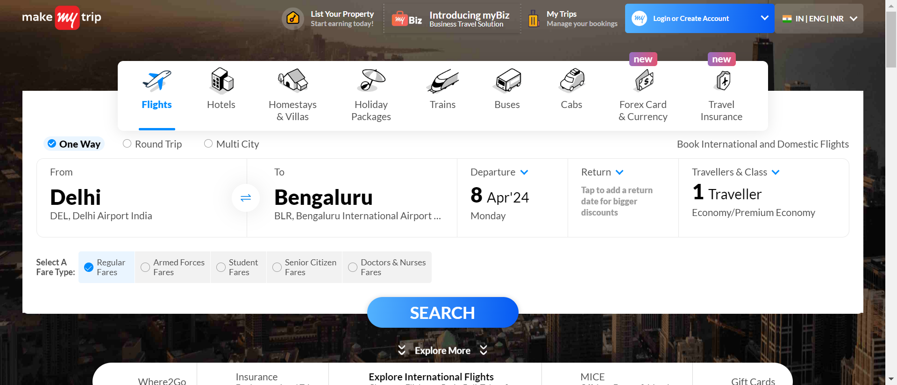
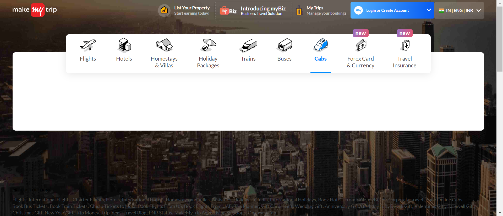
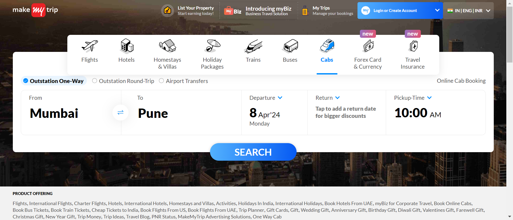
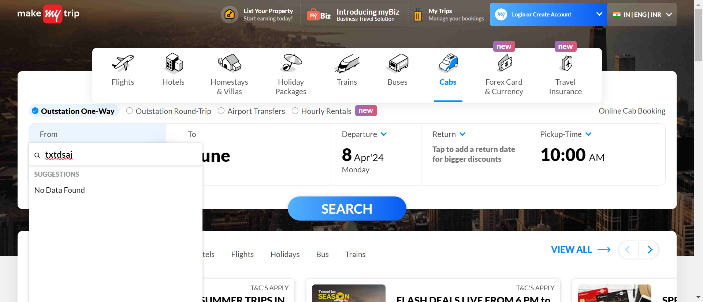
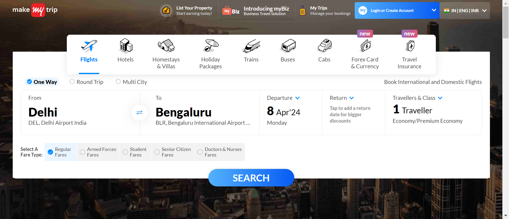
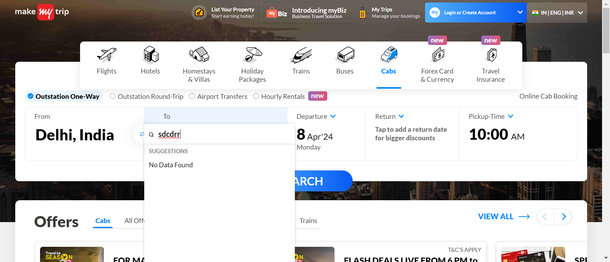
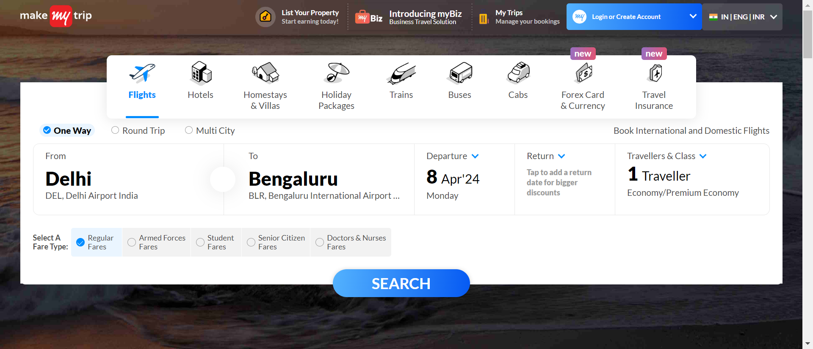
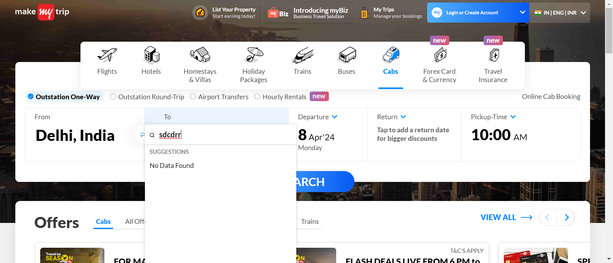
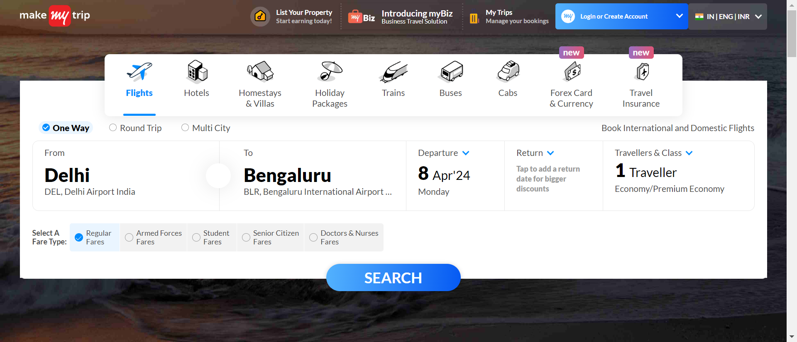

-
Functionality of CabPage
11:54:16 am / 00:01:41:810 Fail
Functionality of CabPage
04.07.2024 11:54:16 am 04.07.2024 11:55:58 am 00:01:41:810 · #test-id=1Pass(3) To verify the the functionality of "From" dropdown button of the cab webpage with invalid dateGiven the user navigates to pagestepDefinitions.Hooks.addScreenshot(io.cucumber.java.Scenario)(3) To verify the the functionality of "From" dropdown button of the cab webpage with invalid dateThen user close the AdsstepDefinitions.Hooks.addScreenshot(io.cucumber.java.Scenario)(3) To verify the the functionality of "From" dropdown button of the cab webpage with invalid dateAnd user click the Cab iconstepDefinitions.Hooks.addScreenshot(io.cucumber.java.Scenario)(3) To verify the the functionality of "From" dropdown button of the cab webpage with invalid dateAnd user click the One-Way cabstepDefinitions.Hooks.addScreenshot(io.cucumber.java.Scenario)(3) To verify the the functionality of "From" dropdown button of the cab webpage with invalid dateWhen user entered from "txtdsaj"stepDefinitions.Hooks.addScreenshot(io.cucumber.java.Scenario)(3) To verify the the functionality of "From" dropdown button of the cab webpage with invalid dateThen check whether the entered detail is validstepDefinitions.Hooks.addScreenshot(io.cucumber.java.Scenario)(3) To verify the the functionality of "From" dropdown button of the cab webpage with invalid datePass(4) To verify the the functionality of "To" dropdown button of the cab webpage with invalid dateGiven the user navigates to pagestepDefinitions.Hooks.addScreenshot(io.cucumber.java.Scenario)(4) To verify the the functionality of "To" dropdown button of the cab webpage with invalid dateThen user close the AdsstepDefinitions.Hooks.addScreenshot(io.cucumber.java.Scenario)(4) To verify the the functionality of "To" dropdown button of the cab webpage with invalid dateAnd user click the Cab iconstepDefinitions.Hooks.addScreenshot(io.cucumber.java.Scenario)(4) To verify the the functionality of "To" dropdown button of the cab webpage with invalid date And user click the One-Way cabstepDefinitions.Hooks.addScreenshot(io.cucumber.java.Scenario)(4) To verify the the functionality of "To" dropdown button of the cab webpage with invalid date
And user click the One-Way cabstepDefinitions.Hooks.addScreenshot(io.cucumber.java.Scenario)(4) To verify the the functionality of "To" dropdown button of the cab webpage with invalid date When user enter from "Delhi"stepDefinitions.Hooks.addScreenshot(io.cucumber.java.Scenario)(4) To verify the the functionality of "To" dropdown button of the cab webpage with invalid dateAnd user entered to "sdcdrr"stepDefinitions.Hooks.addScreenshot(io.cucumber.java.Scenario)(4) To verify the the functionality of "To" dropdown button of the cab webpage with invalid dateThen check whether the entered detail is valid.stepDefinitions.Hooks.addScreenshot(io.cucumber.java.Scenario)(4) To verify the the functionality of "To" dropdown button of the cab webpage with invalid dateFail(8) To verify "Filters" in Cab webpageGiven the user navigates to pagestepDefinitions.Hooks.addScreenshot(io.cucumber.java.Scenario)(8) To verify "Filters" in Cab webpageThen user close the AdsstepDefinitions.Hooks.addScreenshot(io.cucumber.java.Scenario)And user click the Cab iconStep skippedAnd user click the One-Way cabStep skippedWhen user enter from "Delhi"Step skippedAnd user enter to "Manali, Himachal Pradesh"Step skippedAnd user enter Departure "Apr 08 2024"Step skippedAnd user enter Pickup Time-Hours "6"Step skippedAnd user enter Pickup Time-Min "30"Step skippedAnd user enter Pickup Time-Meridiam "AM"Step skippedThen Click on Apply buttonStep skippedAnd Click on Search buttonStep skippedWhen user Check SUV cab type option in filterStep skippedThen check that cab type filter is appliedStep skippedFail(11) To verify the the functionality of "From" dropdown button of the cab webpage with valid datestepDefinitions.Hooks.setup()Given the user navigates to pageStep skippedThen user close the AdsStep skippedAnd user click the Cab iconStep skippedAnd user click the One-Way cabStep skippedWhen user enter from "Delhi"Step skippedAnd user enter to "Manali, Himachal Pradesh"Step skippedThen check the function of Departure date with valid input "May 13 2024"Step skippedFail(12) To verify the the functionality of "From" dropdown button of the cab webpage with invalid datestepDefinitions.Hooks.setup()Given the user navigates to pageStep skippedThen user close the AdsStep skippedAnd user click the Cab iconStep skippedAnd user click the One-Way cabStep skippedWhen user enter from "Delhi"Step skippedAnd user enter to "Manali, Himachal Pradesh"Step skippedThen check the function of Departure date with invalid input "May 13 2023"Step skippedFail(13) To verify the functionality of Return date in "OUTSTATION-round trip" with valid dateGiven the user navigates to pagestepDefinitions.Hooks.addScreenshot(io.cucumber.java.Scenario)Then user close the AdsStep skippedAnd user click the Cab iconStep skippedWhen user click the Outstation Round-TripStep skippedAnd user enter from "Delhi"Step skippedAnd user enter to "Manali, Himachal Pradesh"Step skippedThen check the function of Departure date with valid input "May 13 2024"Step skippedFail(14) To verify the functionality of Return date in "OUTSTATION-round trip" with valid datestepDefinitions.Hooks.setup()Given the user navigates to pageStep skippedThen user close the AdsStep skippedAnd user click the Cab iconStep skippedWhen user click the Outstation Round-TripStep skippedAnd user enter from "Delhi"Step skippedAnd user enter to "Manali, Himachal Pradesh"Step skippedThen check the function of Departure date with invalid input "May 13 2023"Step skipped
When user enter from "Delhi"stepDefinitions.Hooks.addScreenshot(io.cucumber.java.Scenario)(4) To verify the the functionality of "To" dropdown button of the cab webpage with invalid dateAnd user entered to "sdcdrr"stepDefinitions.Hooks.addScreenshot(io.cucumber.java.Scenario)(4) To verify the the functionality of "To" dropdown button of the cab webpage with invalid dateThen check whether the entered detail is valid.stepDefinitions.Hooks.addScreenshot(io.cucumber.java.Scenario)(4) To verify the the functionality of "To" dropdown button of the cab webpage with invalid dateFail(8) To verify "Filters" in Cab webpageGiven the user navigates to pagestepDefinitions.Hooks.addScreenshot(io.cucumber.java.Scenario)(8) To verify "Filters" in Cab webpageThen user close the AdsstepDefinitions.Hooks.addScreenshot(io.cucumber.java.Scenario)And user click the Cab iconStep skippedAnd user click the One-Way cabStep skippedWhen user enter from "Delhi"Step skippedAnd user enter to "Manali, Himachal Pradesh"Step skippedAnd user enter Departure "Apr 08 2024"Step skippedAnd user enter Pickup Time-Hours "6"Step skippedAnd user enter Pickup Time-Min "30"Step skippedAnd user enter Pickup Time-Meridiam "AM"Step skippedThen Click on Apply buttonStep skippedAnd Click on Search buttonStep skippedWhen user Check SUV cab type option in filterStep skippedThen check that cab type filter is appliedStep skippedFail(11) To verify the the functionality of "From" dropdown button of the cab webpage with valid datestepDefinitions.Hooks.setup()Given the user navigates to pageStep skippedThen user close the AdsStep skippedAnd user click the Cab iconStep skippedAnd user click the One-Way cabStep skippedWhen user enter from "Delhi"Step skippedAnd user enter to "Manali, Himachal Pradesh"Step skippedThen check the function of Departure date with valid input "May 13 2024"Step skippedFail(12) To verify the the functionality of "From" dropdown button of the cab webpage with invalid datestepDefinitions.Hooks.setup()Given the user navigates to pageStep skippedThen user close the AdsStep skippedAnd user click the Cab iconStep skippedAnd user click the One-Way cabStep skippedWhen user enter from "Delhi"Step skippedAnd user enter to "Manali, Himachal Pradesh"Step skippedThen check the function of Departure date with invalid input "May 13 2023"Step skippedFail(13) To verify the functionality of Return date in "OUTSTATION-round trip" with valid dateGiven the user navigates to pagestepDefinitions.Hooks.addScreenshot(io.cucumber.java.Scenario)Then user close the AdsStep skippedAnd user click the Cab iconStep skippedWhen user click the Outstation Round-TripStep skippedAnd user enter from "Delhi"Step skippedAnd user enter to "Manali, Himachal Pradesh"Step skippedThen check the function of Departure date with valid input "May 13 2024"Step skippedFail(14) To verify the functionality of Return date in "OUTSTATION-round trip" with valid datestepDefinitions.Hooks.setup()Given the user navigates to pageStep skippedThen user close the AdsStep skippedAnd user click the Cab iconStep skippedWhen user click the Outstation Round-TripStep skippedAnd user enter from "Delhi"Step skippedAnd user enter to "Manali, Himachal Pradesh"Step skippedThen check the function of Departure date with invalid input "May 13 2023"Step skipped
-
org.openqa.selenium.NoSuchWindowException
5 tests
org.openqa.selenium.NoSuchWindowException
5 failedStatus Timestamp TestName Fail 11:55:26 am stepDefinitions.Hooks.addScreenshot(io.cucumber.java.Scenario) Functionality of CabPage.(8) To verify "Filters" in Cab webpage.stepDefinitions.Hooks.addScreenshot(io.cucumber.java.Scenario)Fail 11:55:29 am stepDefinitions.Hooks.setup() Functionality of CabPage.(11) To verify the the functionality of "From" dropdown button of the cab webpage with valid date.stepDefinitions.Hooks.setup()Fail 11:55:37 am stepDefinitions.Hooks.setup() Functionality of CabPage.(12) To verify the the functionality of "From" dropdown button of the cab webpage with invalid date.stepDefinitions.Hooks.setup()Fail 11:55:49 am stepDefinitions.Hooks.addScreenshot(io.cucumber.java.Scenario) Functionality of CabPage.(13) To verify the functionality of Return date in "OUTSTATION-round trip" with valid date.stepDefinitions.Hooks.addScreenshot(io.cucumber.java.Scenario)Fail 11:55:51 am stepDefinitions.Hooks.setup() Functionality of CabPage.(14) To verify the functionality of Return date in "OUTSTATION-round trip" with valid date.stepDefinitions.Hooks.setup()
-
@regression
7 tests
@regression
2 passed 5 failedStatus Timestamp TestName Pass 11:54:16 am (3) To verify the the functionality of "From" dropdown button of the cab webpage with invalid date Functionality of CabPage.(3) To verify the the functionality of "From" dropdown button of the cab webpage with invalid datePass 11:54:41 am (4) To verify the the functionality of "To" dropdown button of the cab webpage with invalid date Functionality of CabPage.(4) To verify the the functionality of "To" dropdown button of the cab webpage with invalid dateFail 11:55:12 am (8) To verify "Filters" in Cab webpage Functionality of CabPage.(8) To verify "Filters" in Cab webpageFail 11:55:29 am (11) To verify the the functionality of "From" dropdown button of the cab webpage with valid date Functionality of CabPage.(11) To verify the the functionality of "From" dropdown button of the cab webpage with valid dateFail 11:55:37 am (12) To verify the the functionality of "From" dropdown button of the cab webpage with invalid date Functionality of CabPage.(12) To verify the the functionality of "From" dropdown button of the cab webpage with invalid dateFail 11:55:44 am (13) To verify the functionality of Return date in "OUTSTATION-round trip" with valid date Functionality of CabPage.(13) To verify the functionality of Return date in "OUTSTATION-round trip" with valid dateFail 11:55:51 am (14) To verify the functionality of Return date in "OUTSTATION-round trip" with valid date Functionality of CabPage.(14) To verify the functionality of Return date in "OUTSTATION-round trip" with valid date
Started
Apr 7, 2024 11:54:15 am
Ended
Apr 7, 2024 11:55:58 am
Features Passed
0
Features Failed
1
Features
Scenarios
Steps
Timeline
Tags
| Name | Passed | Failed | Skipped | Others | Passed % |
|---|---|---|---|---|---|
| @regression | 2 | 5 | 0 | 0 | 28.571% |